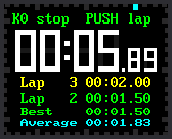

Lab 15: Stopwatch

Time a race, a breath-hold, or a trip around the block. This stopwatch shows minutes, seconds and hundredths of a second. It also keeps lap times, the time each trip around a track takes. Press the knob each time you pass the start line.
| Control | What it does |
|---|---|
| K0 | Start and stop |
| Press the knob | While running: record a lap. While stopped: reset to zero. |
| Turn the knob | Nothing in this lab |
The top line of the screen always says what the controls do right now. It calls a press of the knob PUSH.
Welcome to Lab 15
 On your marks! This stopwatch times laps the way a coach's does, and
it hides a timing trick that real stopwatches use. Let's make time
tick!
On your marks! This stopwatch times laps the way a coach's does, and
it hides a timing trick that real stopwatches use. Let's make time
tick!
What You Will Learn
- how a stopwatch keeps time without counting
- how to find the fastest lap and the average lap
- how one file can hold parts that many programs share
Run It
- Open
15-stopwatch.pyin Thonny and click Run. The screen shows00:00.00and the top line saysK0 start. - Press K0. The digits start to run and the top line turns green.
- Press the knob straight down. A lap time appears under the digits.
- Press the knob two more times, a few seconds apart. The fastest lap
turns green, and
BestandAverageappear. - Press K0 to stop. The top line turns yellow.
- Press the knob to reset to zero, or press K0 to keep going.
Reset only works while the stopwatch is stopped. That way a bump of the knob can't wipe out a run.
It Remembers When It Started
You might guess that a stopwatch counts: add a little time, again and again. It doesn't. Each trip around the loop takes a slightly different time, so the small errors would pile up.
Think of a cook who puts a cake in the oven. The cook doesn't count seconds out loud for an hour. The cook writes "in at 3:15" on a note, and looks at the wall clock later.
The Pico has a wall clock too: a counter of milliseconds, or thousandths of a second, that never stops. When you press K0, the stopwatch writes down the counter's reading. To find the time so far, it reads the counter again:
1 2 3 4 | |
nowis the newest reading of the counter.run_startedis the reading from when you pressed K0.time.ticks_diff(now, run_started)is how far apart those two readings are.banked_msis time saved up from before the last stop. It starts at 0.
Follow the numbers through one run:
| What happens | Counter reads | run_started |
banked_ms |
Stopwatch shows |
|---|---|---|---|---|
| You press K0 to start | 20,000 | 20,000 | 0 | 00:00.00 |
| A moment later | 25,890 | 20,000 | 0 | 0 + 5,890, so 00:05.89 |
| You press K0 to stop | 27,000 | 20,000 | 7,000 | 00:07.00 |
| You press K0 to go on | 60,000 | 60,000 | 7,000 | 00:07.00 |
| A moment later | 61,500 | 60,000 | 7,000 | 7,000 + 1,500, so 00:08.50 |
The program reads the counter with time.ticks_ms(). For a reminder,
see the
timing functions lab in Learning MicroPython.
Which Moment to Remember?
 When a program must measure time, ask which moment it should write
down. The stopwatch writes down its start. In the next lab, the timer
writes down the moment it will end.
When a program must measure time, ask which moment it should write
down. The stopwatch writes down its start. In the next lab, the timer
writes down the moment it will end.
Laps: Fastest and Average
A lap is the time since you last pressed the knob. This code runs each time you press it:
1 2 3 4 5 | |
totalis the stopwatch time right now.MAX_MSstops it at 99:59.99, the most the digits can show.total - lap_started_msis this lap: the time now, minus the time when the lap began.laps.append(...)adds the lap to a list namedlaps.lap_started_ms = totalstarts the next lap from here.
Then show_laps() does some arithmetic on the list. Python's min()
finds the smallest number, which is the fastest lap. For the average, it
adds up all the laps with sum(), then divides by how many there are.
Check the picture. The list has room for the two newest laps, 1.50 and 2.00 seconds. Lap 1 took 2.00 and has scrolled off. The fastest is 1.50, so lap 2 is green. The average is 5.50 ÷ 3, which is about 1.83.
Parts Packed in One File
This program is short because it borrows its parts. The file
lib/watchparts.py holds the parts from earlier labs, packed in one
file. A file like that is called a module, and import brings its
parts into your program:
1 | |
| Part | What it is | Where you met the idea |
|---|---|---|
Digit |
a seven-bar digit that repaints only the pieces that change | lab 13 |
TickFrame |
the 60 ticks around the edge of the screen | lab 13 |
TextLine |
a line of text that repaints only the letters that change | lab 13 |
Button |
a push button that ignores bounce | lab 12 |
Knob |
the knob, counted in clicks | labs 06 and 07 |
DIGITS is lab 13's table of bit patterns. This lab doesn't turn the
knob, so Knob waits for the next lab.
Try This
- Press the knob quickly for lap 1. Take your time on laps 2 and 3.
Lap 1 has scrolled off the list. Does
Beststill remember it? - Change
FASTEST_COLOR = config.GREENtoconfig.MAGENTA. Which two things change color? - In the
HINTSline, change"K0 start"to"Ready? Press K0!". Keep it to 18 characters or fewer, or the end gets cut off. - Change
LAP_ROWS = 2toLAP_ROWS = 1. What moves?
If It Doesn't Work
- Pressing the knob does nothing. A lap only works while the stopwatch runs. Reset only works while it is stopped. Read the top line of the screen.
BestandAverageare blank. They appear after your second lap.- Thonny says
ImportError: no module named 'watchparts'. Thelibfolder is missing from the Pico. Copy the kit's files again, as the kit's main page shows.
No Counting Needed!
 You built a stopwatch that remembers a moment instead of counting.
You used
You built a stopwatch that remembers a moment instead of counting.
You used min() and an average to rank your laps. Next, you'll flip
the idea around and count down to an alarm.
Next: Lab 16: Countdown Timer